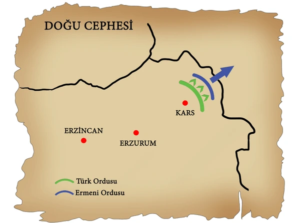

DOĞU CEPHESİ (1919-1921)
Doğu cephesi, Türk Kurtuluş Savaşı sırasında açılan ilk askerî cephedir ve TBMM’nin uluslararası alanda ilk başarısını kazandığı cephe olmuştur. Doğu Anadolu ve Güney Kafkasya'da Türklerin Ermenilere karşı mücadele verdiği savaştır. Bu cephede Osmanlı’dan kalan 15. Kolordu’nun başında bulunan Kazım Karabekir çok önemli bir rol oynamıştır.
Kısacası:
- Cephede Ermeniler ile savaşılmıştır
- Doğu Anadolu'da Kazım Karabekir komutasında Osmanlı Devleti'nden kalma düzenli ordu olan 15. Kolordu bulunmaktadır
- Düzenli ordunun savaştığı ilk cephedir
Ermeniler XIX. yüzyılın ikinci yarısından itibaren Osmanlı Devleti'nden ayrılıp bağımsızlıklarını kazanmak için defalarca ayaklanma başlatmışlardır. I. Dünya Savaşı'nda Ruslar tarafından silahlandırılan ve destek verilen Ermeniler, Doğu Anadolu'da bir devlet kurabilmek amacıyla bazı yerleri işgal etmişlerdir. Çeteler halinde halka saldırıp katliam yapmışlardır. Rusya'nın Bolşevik İhtilali'nin yaşanması ile Ermeniler Güney Kafkasya sınırlarında bir devlet kurdular. Batılı devletlerden de her türlü yardım ve desteği aldı. İtilaf devletleri, Mondros Ateşkes Antlaşması'nın 24. maddesi ile Doğu Anadolu'da bir Ermeni devleti kurulmasına zemin hazırladı. Paris Barış Konferansı'nda ise devletin kurulması kararlaştırıldı. Sevr Antlaşması'nda devletin kurulmasına yer verildi. Tüm bu gelişmelerden cesaret alan Ermeniler, İngilizlerin kışkırtmaları ile saldırılarını arttırdılar ve Kars, Sarıkamış, Oltu'yu ele geçirdiler.
TBMM 15 Haziran 1920 tarihinde Kazım Karabekir'i 15. Kolordu Komutanlığına atadı. Kazım Karabekir Paşa komutasındaki birlikler 28 Eylül 1920'den itibaren Doğu'da taarruza başladı 29 Eylül'de Sarıkamış, 30 Ekim'de de Kars geri alındı. Türk kuvvetleri, 7 Kasım 1920'de Gümrü'deki son direnişi de kırdı.


Gümrü Antlaşması: (3.12.1920)
Doğu cephesinde Ermeniler karşılaştıkları başarısızlık ardından barış isteyince 3 Aralık 1920 tarihinde Gümrü Anlaştması imzalanılmıştır. Bu antlaşmaya göre:
- Ermeniler işgal ettikleri yerlerden geri çekilecek
- Kars, Sarıkamış, Kağızman, Iğdır, Oltu ve Kulp BMM hükümetine bırakılacak
- Ermeniler Sevr Antlaşmasını'nın geçersiz olduğunu kabul edecek
- Ve Doğu Anadolu'ya yönelik toprak taleplerinden vazgeçecekti.
Gümrü Antlaşması Sonuçları:
- Doğu Cephesi başarı ile kapanmıştır.
- Ermeniler Doğu Anadolu'daki isteklerinden vazgeçmişlerdir
- Ermenistan, Misakımillî’yi kabul eden, TBMM'yi uluslararası alanda tanıyan ve Sevr'i kabul etmeyen ilk devlet olmuştur.
- TBMM'nin ilk siyasi ve askeri başarısıdır.
- Cephedeki birliklerin bir kısmı ve Ermenilerden ele geçirilen birçok silah Batı Cephe'sine kaydırıldı